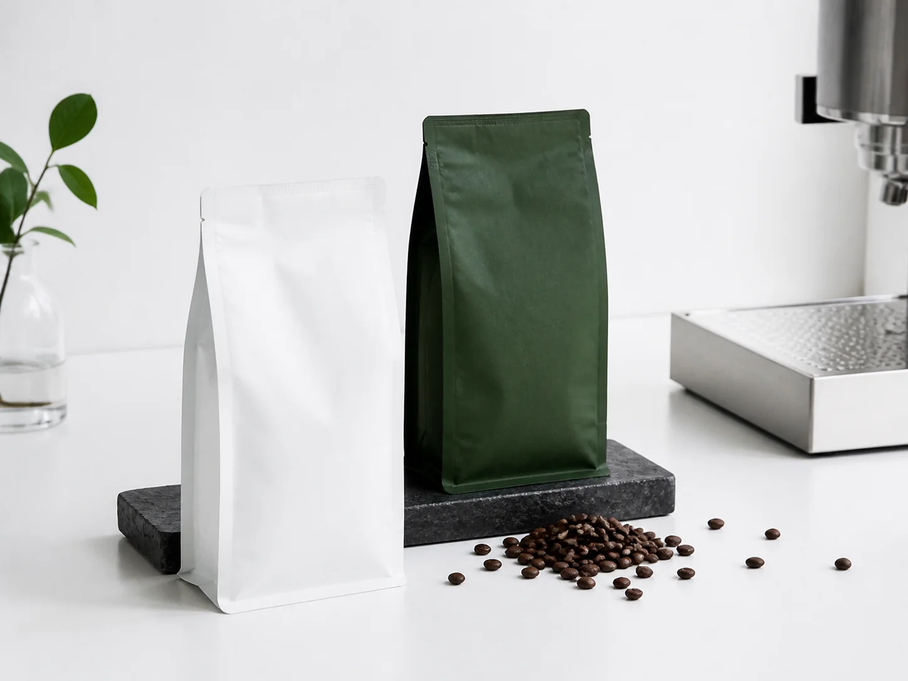
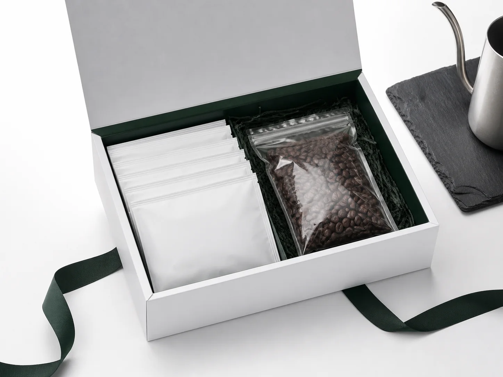
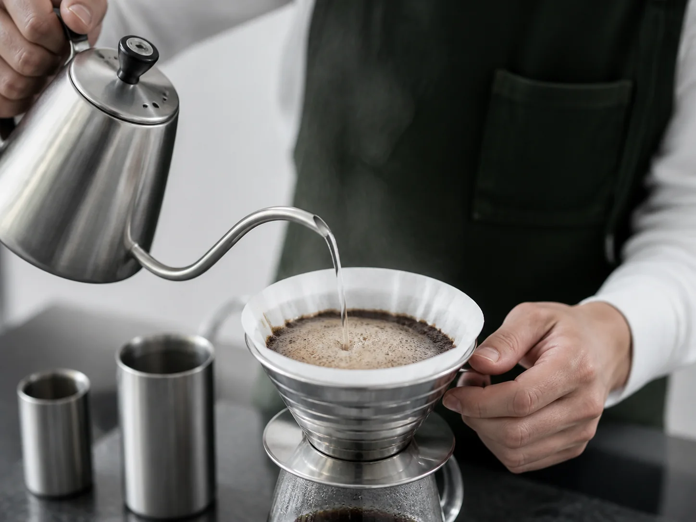
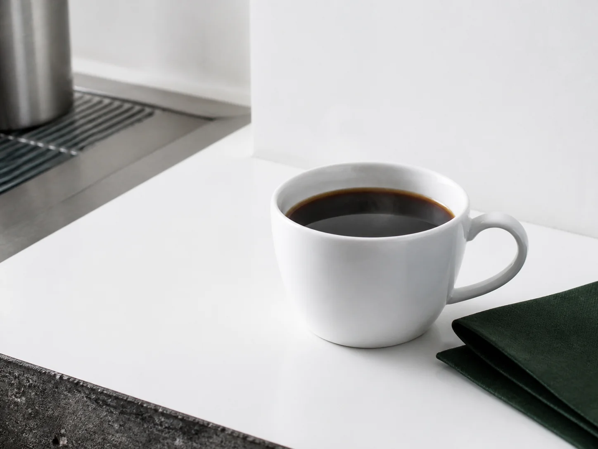

自家焙煎 / Roasted in our shop
香りの向こうに、
人がいる。
ひだまり珈琲店は、産地の個性を伝えるために少量ずつ焙煎します。火曜日と金曜日の朝、店の奥から聞こえる焙煎機の音が、街の合図です。
「いつもの一杯」が、いつも少し新しい。
Roast Lab / 05 — Morning specialty coffee
果実味、甘さ、深いコク。産地と焙煎の違いを言葉にして、今日の気分に合う豆へ案内します。

Bean finder
自家焙煎 / Roasted in our shop
ひだまり珈琲店は、産地の個性を伝えるために少量ずつ焙煎します。火曜日と金曜日の朝、店の奥から聞こえる焙煎機の音が、街の合図です。
「いつもの一杯」が、いつも少し新しい。
Space & amenities
カウンターとテーブル。ひとりの読書も、会話のあるランチも。
Wi-Fi完備、電源8席。60分を目安に気持ちよくご利用ください。
ベビーカーで入店できます。テラスはペット同伴可です。
Visit Hidamari
みなと中央駅 南口から徒歩3分
〒100-0005 東京都架空区みなと中央2-14-6
平日 7:30〜19:00
土日祝 8:00〜18:00
火曜日定休

道順を確認する朝7時30分から、街の一日を整える｜営業時間：平日 7:30〜19:00 / 土日祝 8:00〜18:00 / 火曜日定休｜Wi-Fi・電源8席・キャッシュレス・ベビーカー入店・テラスのみペット可
TODAY / HOUR / STATION
平日は7:30から、土日祝は8:00から。駅を出て南口をまっすぐ歩くと、白い壁とステンレスの庇、焙煎の香りが目印です。


Before you visit
現在は予約を受け付けていません。混雑時は店頭で順番にご案内します。
ドリンク、焼き菓子、豆をご用意しています。専用窓口からお声がけください。
現金、主要なクレジットカード、交通系IC、コード決済に対応しています。
Take a little sunshine home
豆、ドリップバッグ、季節の焼き菓子。店で過ごした時間の続きを、ご自宅でも。